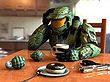

De: La Frikipedia, la enciclopedia extremadamente seria.
De: La Frikipedia, la enciclopedia extremadamente seria. De: La Frikipedia, la enciclopedia extremadamente seria.
|  | Este usuario cree que ya era hora de jubilar al Jefe Maestro |
Para usar esta plantilla no copies el código, simplemente escribe {{Frikibox/Master Chief}}.
Autor(es):